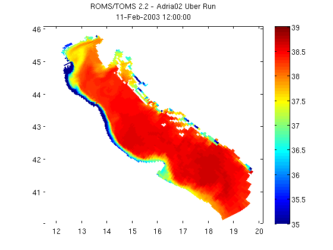

Contents
- NCGEODATASET GEODEMO_1B
- Take a look at the variables available within the dataset
- Determine the shape of the selected variable
- Use START, STOP, STRIDE array style indexing with NCTOOLBOX
- START, STOP, STRIDE array style indexing to return coordinate axes
- Use the time method to convert model time to MATLAB's datenum
- Plot with MATLAB's pcolor command
NCGEODATASET GEODEMO_1B
Method B: Read surface salinity with corner/edge/stride syntax. If you are more used to working with NetCDF in Fortran than in Matlab, this may be the syntax for you.
% OPeNDAP Data URL for a CF-Compliant curvilinear ROMS model dataset url ='http://geoport.whoi.edu/thredds/dodsC/examples/bora_feb.nc'; nc = ncgeodataset(url)
nc =
ncgeodataset handle
Properties:
location: 'http://geoport.whoi.edu/thredds/dodsC/examples/bora_feb.nc'
netcdf: [1x1 ucar.nc2.dataset.NetcdfDataset]
variables: {80x1 cell}
Take a look at the variables available within the dataset
To access the properties we can use typical dot notation like with ordinary Matlab structures. Here we want to get a list of the variables in the dataset we are looking at.
nc.variables
ans =
'AKs'
'AKt'
'AKv'
'Akk_bak'
'Akp_bak'
'Akt_bak'
'Akv_bak'
'Cs_r'
'Cs_w'
'Falpha'
'Fbeta'
'Fgamma'
'M2nudg'
'M3nudg'
'Tcline'
'Tnudg'
'Znudg'
'Zob'
'Zos'
'angle'
'dstart'
'dt'
'dtfast'
'el'
'f'
'gamma2'
'gls_Kmin'
'gls_Pmin'
'gls_c1'
'gls_c2'
'gls_c3m'
'gls_c3p'
'gls_cmu0'
'gls_m'
'gls_n'
'gls_p'
'gls_sigk'
'gls_sigp'
'h'
'hc'
'mask_psi'
'mask_rho'
'mask_u'
'mask_v'
'nAVG'
'nHIS'
'nRST'
'nSTA'
'ndefHIS'
'ndtfast'
'ntimes'
'ntsAVG'
'pm'
'pn'
'rdrg'
'rdrg2'
'rho0'
'salt'
'spherical'
'temp'
'theta_b'
'theta_s'
'tnu2'
'u'
'ubar'
'v'
'vbar'
'xl'
'zeta'
'lat_psi'
'lat_rho'
'lat_u'
'lat_v'
'lon_psi'
'lon_rho'
'lon_u'
'lon_v'
'ocean_time'
's_rho'
's_w'
Determine the shape of the selected variable
The size method is a method of ncgeodataset that returns the length of each of the dimensions of a given variable in the dataset. This is a lot like Matlab's internal size command, but in this case we haven't even loaded any data into memory yet. All this information comes from the netcdf-java cdm.
sz = nc.size('salt')
sz =
8 20 60 160
Use START, STOP, STRIDE array style indexing with NCTOOLBOX
This syntax uses more of a C or Java syntax for subsetting arrays (but maintains Matlab's start at 1 indices).
% To access data this way, use the data method on the ncgeodataset object % representing your local or remote netcdf dataset. This is a lower level % data access method. Call data with arguments of variable name, start % indices for each dimension, end indices for each dimension, and an % optional stride vector for each dimension. % let take a look at the dimension names first, which will inform how % we need to specify the indices nc.dimensions('salt') % We see that we have time, z, y, x dimensions, in that order nz=sz(2); salinity = nc.data('salt', [1 nz 1 1], [1 nz 60 160], [1 1 1 1]); size(salinity) salinity = squeeze(double(salinity));
ans =
'ocean_time'
's_rho'
'eta_rho'
'xi_rho'
ans =
1 1 60 160
START, STOP, STRIDE array style indexing to return coordinate axes
In order to access the coordinate information for the salt variable call the grid method on the ncgeodataset object with the same arguments as data.
% Note that accessing coordinate data this way depends on the coordinates % attribute in the netcdf variable to define the variable coordinates. In % this case, even though time and z coordinates should be included, only % lat_rho and lon_rho are defined in the coordinates attributes, so only % they are returned by the grid method. salinity_coords = nc.grid('salt', [1 nz 1 1], [1 nz 60 160], [1 1 1 1])
salinity_coords =
lat_rho: [60x160 double]
lon_rho: [60x160 double]
Use the time method to convert model time to MATLAB's datenum
Lets grab the date for the subset we requested so that we can add it to the figure title, since it wasn't included in the grid command results. We can use the time method on the ncgeodataset object to do the conversion from the model's ocean_time to Matlab's datenum. The first argument should be the name of the time variable, and the second is the value of the time that you are trying to convert or an array of values. The second argument is optional, and if omitted the entire length of the time variable is converted to datenum.
time = nc.time('ocean_time', nc.data('ocean_time', 1, 1)) time = datestr(time)
time = 7.3162e+005 time = 11-Feb-2003 12:00:00
Plot with MATLAB's pcolor command
Plotting using pcolor is as simple as the code below. Sometimes coordinates are stored in the netcdf datasets as vectors (vs. the 2-d arrays that these lat/lon coordinates are in). When this is the case, see Matlab's meshgrid function to create 2-d plaid grids from the vectors.
pcolor(salinity_coords.lon_rho, salinity_coords.lat_rho, salinity) shading flat; colorbar; caxis([35 39]); % Now let's add a title to the figure that includes the dataset's global % attribute title and the date of the data that we subset. title({nc.attribute('title'); time})